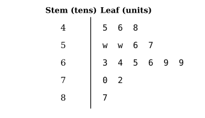
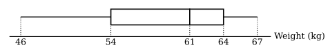

2025 DSE 數學 P1 Q12 答案＋詳解
題目（英文卷）
12. The stem-and-leaf diagram below shows the distribution of the weights (in kg) of some athletes before training.

The difference of the range and the inter-quartile range of the above distribution is $25\ \text{kg}$.
(a) Write down the range of the above distribution. Hence, find $w$. (3 marks)
(b) The box-and-whisker diagram below shows the distribution of the weights (in kg) of the athletes after the training.

(i) Find the change in the upper quartile of the distribution due to the training.
(ii) Is the distribution of the weights of the athletes after the training less dispersed than that before the training? Explain your answer. (4 marks)
官方評卷參考（Marking Scheme）
| Solution | Marks | Remarks |
|---|---|---|
| The range= 42 kg | 1A | |
| The inter-quartile range= 42 - 25= 17 kg | 1M | |
| The upper quartile= 69 kg | ||
| The lower quartile= 69 - 17= 52 kg | ||
| Thus, we have w = 2 . | 1A----(3) | |
| (b) (i) | The change in the upper quartile= 64 - 69= -5 kg | 1M1A |
| Thus, the upper quartile is decreased by 5 kg . | ||
| (ii) | The range of the distribution before the training= 42 kg | |
| The range of the distribution after the training= 67 - 46= 21 kg | ||
| Therefore, the range of the distribution after the training is less than that before the training.Thus, the distribution of the weights of the athletes is less dispersed than that before the training. | 1M1A | f.t. |
| The inter-quartile range of the distribution before the training= 17 kg | ||
| The inter-quartile range of the distribution after the training= 64 - 54= 10 kg | ||
| Therefore, the inter-quartile range of the distribution after the training is less than that before the training.Thus, the distribution of the weights of the athletes is less dispersed than that before the training. | 1M1A | f.t. |
| ----(4) | ||
| Solution | Marks | Remarks |
考評報告
Very good. Over 75% of the candidates were able to write down the range of the distribution and find the value of w. A small number of the candidates wrongly thought that the inter-quartile range of the distribution was 25 kg .Good. Over half of the candidates were able to find the change in the upper quartile of the distribution due to the training. Some candidates wrongly gave the change in the inter-quartile range of the distribution as the answer.Good. Over half of the candidates were able to get the correct conclusion with reasonable explanation
相關課題
技能分析（呢題考咩、陷阱喺邊）
- 主課題
- 統計圖表
- 相關課題
- 統計圖表、集中趨勢與離差